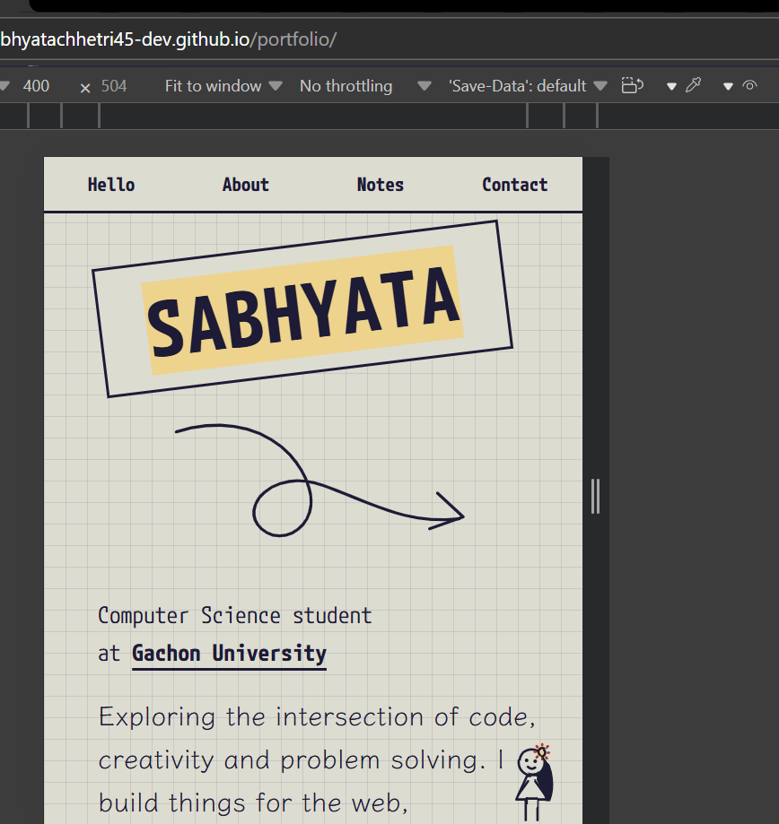

Mobile view audit
Verification summary: The page was reviewed for mobile responsiveness and touch-friendly layout.
- Content stacks cleanly on smaller screens with readable spacing.
- Navigation and buttons remain usable on touch devices.
- Typography and image scaling preserve clarity at mobile sizes.
Responsive Web
Mobile View Portfolio
A mobile-first interface design focused on clean typography, touch-friendly layout, and accessible interaction patterns.
View Report →